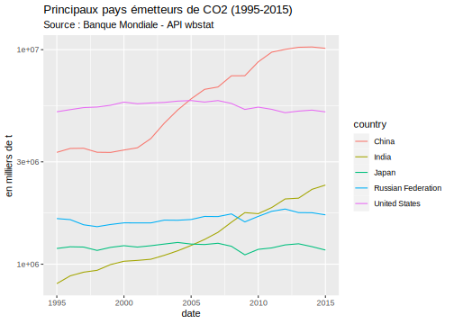
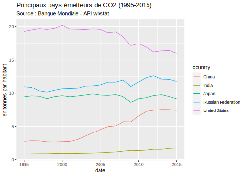
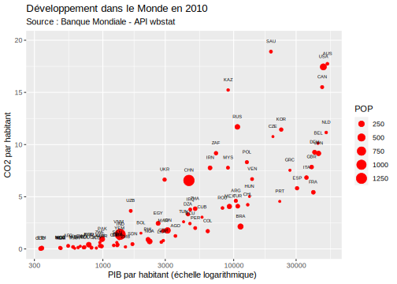
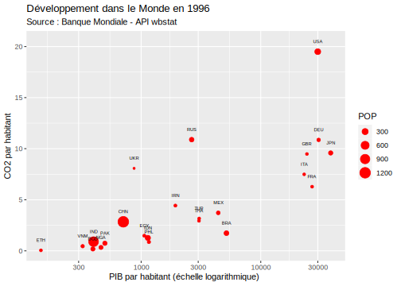

Chapitre 2 L’API Wbstats (Banque Mondiale)
## Global options
library(knitr)
library(dplyr)
library(ggplot2)
opts_chunk$set(echo=TRUE,
cache=TRUE,
prompt=FALSE,
tidy=FALSE,
comment=NA,
message=FALSE,
warning=FALSE)2.1 Objectifs
Supposons que l’on souhaite télécharger la population, le PIB et les émisssions de CO2 des pays du monde de 2000 à 2015. Plutôt que d’aller chercher des fichiers sur un site web, nous allons utiliser une API proposée par la Banque Mondiale qui permet de télécharger les données facilement et surtout de les mettre à jour régulièrement. Pour cela on va installer le package R correspondant à l’API wbstats de la Banque mondiale.
https://cran.r-project.org/web/packages/wbstats/vignettes/Using_the_wbstats_package.html
Au moment du chargement du package, il est créé un fichier wb_cachelist qui fournit l’ensemble des donnes disponibles sous la forme d’une liste de tableaux de méta-données.
List of 8
$ countries : tibble [304 × 18] (S3: tbl_df/tbl/data.frame)
$ indicators : tibble [16,649 × 8] (S3: tbl_df/tbl/data.frame)
$ sources : tibble [63 × 9] (S3: tbl_df/tbl/data.frame)
$ topics : tibble [21 × 3] (S3: tbl_df/tbl/data.frame)
$ regions : tibble [48 × 4] (S3: tbl_df/tbl/data.frame)
$ income_levels: tibble [7 × 3] (S3: tbl_df/tbl/data.frame)
$ lending_types: tibble [4 × 3] (S3: tbl_df/tbl/data.frame)
$ languages : tibble [23 × 3] (S3: tbl_df/tbl/data.frame)2.2 Le tableau “countries”
Il fournit des renseignements de base sur les différents pays, leurs codes, etc.
tibble [304 × 18] (S3: tbl_df/tbl/data.frame)
$ iso3c : chr [1:304] "ABW" "AFG" "AFR" "AGO" ...
$ iso2c : chr [1:304] "AW" "AF" "A9" "AO" ...
$ country : chr [1:304] "Aruba" "Afghanistan" "Africa" "Angola" ...
$ capital_city : chr [1:304] "Oranjestad" "Kabul" NA "Luanda" ...
$ longitude : num [1:304] -70 69.2 NA 13.2 19.8 ...
$ latitude : num [1:304] 12.52 34.52 NA -8.81 41.33 ...
$ region_iso3c : chr [1:304] "LCN" "SAS" NA "SSF" ...
$ region_iso2c : chr [1:304] "ZJ" "8S" NA "ZG" ...
$ region : chr [1:304] "Latin America & Caribbean" "South Asia" "Aggregates" "Sub-Saharan Africa" ...
$ admin_region_iso3c: chr [1:304] NA "SAS" NA "SSA" ...
$ admin_region_iso2c: chr [1:304] NA "8S" NA "ZF" ...
$ admin_region : chr [1:304] NA "South Asia" NA "Sub-Saharan Africa (excluding high income)" ...
$ income_level_iso3c: chr [1:304] "HIC" "LIC" NA "LMC" ...
$ income_level_iso2c: chr [1:304] "XD" "XM" NA "XN" ...
$ income_level : chr [1:304] "High income" "Low income" "Aggregates" "Lower middle income" ...
$ lending_type_iso3c: chr [1:304] "LNX" "IDX" NA "IBD" ...
$ lending_type_iso2c: chr [1:304] "XX" "XI" NA "XF" ...
$ lending_type : chr [1:304] "Not classified" "IDA" "Aggregates" "IBRD" ...Le tableau comporte 304 observation et il mélange des pays (France), des fragments de pays (Réunion) et des agrégats de pays (Europe). Il faudra donc bien faire attention lors de l’extraction à réfléchir à ce que l’on souhaite utiliser. Par exemple, si l’on veut juste les pays :
## Programme en langage R_base
# pays<-cat$countries[cat$countries$income_level!="Aggregates",c("iso3c", "country","capital_city","longitude","latitude", "region","income_level")]
## Programme en langage dplyr
pays <- cat$countries %>%
filter(income_level !="Aggregates") %>%
select(iso3c,country, capital_city, latitude, longitude, region, income_level)
kable(head(pays))| iso3c | country | capital_city | latitude | longitude | region | income_level |
|---|---|---|---|---|---|---|
| ABW | Aruba | Oranjestad | 12.51670 | -70.0167 | Latin America & Caribbean | High income |
| AFG | Afghanistan | Kabul | 34.52280 | 69.1761 | South Asia | Low income |
| AGO | Angola | Luanda | -8.81155 | 13.2420 | Sub-Saharan Africa | Lower middle income |
| ALB | Albania | Tirane | 41.33170 | 19.8172 | Europe & Central Asia | Upper middle income |
| AND | Andorra | Andorra la Vella | 42.50750 | 1.5218 | Europe & Central Asia | High income |
| ARE | United Arab Emirates | Abu Dhabi | 24.47640 | 54.3705 | Middle East & North Africa | High income |
2.3 Le tableau indicators
Il comporte pas loin de 17000 variables … Autant dire qu’il est difficile de l’explorer facilement si l’on ne sait pas ce que l’on cherche.
[1] 16649 8| indicator_id | indicator | unit | indicator_desc | source_org | topics | source_id | source |
|---|---|---|---|---|---|---|---|
| 1.0.HCount.1.90usd | Poverty Headcount ($1.90 a day) | NA | The poverty headcount index measures the proportion of the population with daily per capita income (in 2011 PPP) below the poverty line. | LAC Equity Lab tabulations of SEDLAC (CEDLAS and the World Bank). | 11 , Poverty | 37 | LAC Equity Lab |
| 1.0.HCount.2.5usd | Poverty Headcount ($2.50 a day) | NA | The poverty headcount index measures the proportion of the population with daily per capita income (in 2005 PPP) below the poverty line. | LAC Equity Lab tabulations of SEDLAC (CEDLAS and the World Bank). | 11 , Poverty | 37 | LAC Equity Lab |
| 1.0.HCount.Mid10to50 | Middle Class ($10-50 a day) Headcount | NA | The poverty headcount index measures the proportion of the population with daily per capita income (in 2005 PPP) below the poverty line. | LAC Equity Lab tabulations of SEDLAC (CEDLAS and the World Bank). | 11 , Poverty | 37 | LAC Equity Lab |
| 1.0.HCount.Ofcl | Official Moderate Poverty Rate-National | NA | The poverty headcount index measures the proportion of the population with daily per capita income below the official poverty line developed by each country. | LAC Equity Lab tabulations of data from National Statistical Offices. | 11 , Poverty | 37 | LAC Equity Lab |
| 1.0.HCount.Poor4uds | Poverty Headcount ($4 a day) | NA | The poverty headcount index measures the proportion of the population with daily per capita income (in 2005 PPP) below the poverty line. | LAC Equity Lab tabulations of SEDLAC (CEDLAS and the World Bank). | 11 , Poverty | 37 | LAC Equity Lab |
| 1.0.HCount.Vul4to10 | Vulnerable ($4-10 a day) Headcount | NA | The poverty headcount index measures the proportion of the population with daily per capita income (in 2005 PPP) below the poverty line. | LAC Equity Lab tabulations of SEDLAC (CEDLAS and the World Bank). | 11 , Poverty | 37 | LAC Equity Lab |
2.3.1 Recherche du code d’un indicateur
Supposons qu’on recherche les données récentes sur les émissions de CO2. On va utiliser le mot-clé CO2 pour rechercher les variables correspondantes dans le catalogue à l’aide de la fonction wbsearch, ce qui donne 45 réponses
Warning: `wbsearch()` is deprecated as of wbstats 1.0.0.
Please use `wb_search()` instead.
This warning is displayed once every 8 hours.
Call `lifecycle::last_warnings()` to see where this warning was generated.| indicatorID | indicator | |
|---|---|---|
| 5294 | EN.ATM.CO2E.CP.KT | CO2 emissions from cement production (thousand metric tons) |
| 5295 | EN.ATM.CO2E.EG.ZS | CO2 intensity (kg per kg of oil equivalent energy use) |
| 5296 | EN.ATM.CO2E.FF.KT | CO2 emissions from fossil-fuels, total (thousand metric tons) |
| 5297 | EN.ATM.CO2E.FF.ZS | CO2 emissions from fossil-fuels (% of total) |
| 5298 | EN.ATM.CO2E.GDP | CO2 emissions, industrial (kg per 1987 US$ of GDP) |
| 5299 | EN.ATM.CO2E.GF.KT | CO2 emissions from gaseous fuel consumption (kt) |
| 5300 | EN.ATM.CO2E.GF.ZS | CO2 emissions from gaseous fuel consumption (% of total) |
| 5301 | EN.ATM.CO2E.GL.KT | CO2 emissions from gas flaring (thousand metric tons) |
| 5302 | EN.ATM.CO2E.KD.87.GD | CO2 emissions, industrial (kg per 1987 US$ of GDP) |
| 5303 | EN.ATM.CO2E.KD.GD | CO2 emissions (kg per 2010 US$ of GDP) |
| 5304 | EN.ATM.CO2E.KT | CO2 emissions (kt) |
| 5305 | EN.ATM.CO2E.LF.KT | CO2 emissions from liquid fuel consumption (kt) |
| 5306 | EN.ATM.CO2E.LF.ZS | CO2 emissions from liquid fuel consumption (% of total) |
| 5307 | EN.ATM.CO2E.PC | CO2 emissions (metric tons per capita) |
| 5308 | EN.ATM.CO2E.PP.GD | CO2 emissions (kg per PPP $ of GDP) |
| 5309 | EN.ATM.CO2E.PP.GD.KD | CO2 emissions (kg per 2017 PPP $ of GDP) |
| 5310 | EN.ATM.CO2E.SF.KT | CO2 emissions from solid fuel consumption (kt) |
| 5311 | EN.ATM.CO2E.SF.ZS | CO2 emissions from solid fuel consumption (% of total) |
| 5312 | EN.ATM.GHGO.KT.CE | Other greenhouse gas emissions, HFC, PFC and SF6 (thousand metric tons of CO2 equivalent) |
| 5314 | EN.ATM.GHGT.KT.CE | Total greenhouse gas emissions (kt of CO2 equivalent) |
| 5316 | EN.ATM.HFCG.KT.CE | HFC gas emissions (thousand metric tons of CO2 equivalent) |
| 5317 | EN.ATM.METH.AG.KT.CE | Agricultural methane emissions (thousand metric tons of CO2 equivalent) |
| 5319 | EN.ATM.METH.EG.KT.CE | Methane emissions in energy sector (thousand metric tons of CO2 equivalent) |
| 5322 | EN.ATM.METH.KT.CE | Methane emissions (kt of CO2 equivalent) |
| 5323 | EN.ATM.METH.PC | Methane emissions (kt of CO2 equivalent per capita) |
| 5325 | EN.ATM.NOXE.AG.KT.CE | Agricultural nitrous oxide emissions (thousand metric tons of CO2 equivalent) |
| 5327 | EN.ATM.NOXE.EG.KT.CE | Nitrous oxide emissions in energy sector (thousand metric tons of CO2 equivalent) |
| 5330 | EN.ATM.NOXE.IN.KT.CE | Industrial nitrous oxide emissions (thousand metric tons of CO2 equivalent) |
| 5332 | EN.ATM.NOXE.KT.CE | Nitrous oxide emissions (thousand metric tons of CO2 equivalent) |
| 5333 | EN.ATM.NOXE.MT.CE | Nitrous oxide emissions (metric tons of CO2 equivalent) |
| 5334 | EN.ATM.NOXE.PC | Nitrous oxide emissions (metric tons of CO2 equivalent per capita) |
| 5336 | EN.ATM.PFCG.KT.CE | PFC gas emissions (thousand metric tons of CO2 equivalent) |
| 5343 | EN.ATM.SF6G.KT.CE | SF6 gas emissions (thousand metric tons of CO2 equivalent) |
| 5348 | EN.CLC.GHGR.MT.CE | GHG net emissions/removals by LUCF (Mt of CO2 equivalent) |
| 5353 | EN.CO2.BLDG.MT | CO2 emissions from residential buildings and commercial and public services (million metric tons) |
| 5354 | EN.CO2.BLDG.ZS | CO2 emissions from residential buildings and commercial and public services (% of total fuel combustion) |
| 5355 | EN.CO2.ETOT.MT | CO2 emissions from electricity and heat production, total (million metric tons) |
| 5356 | EN.CO2.ETOT.ZS | CO2 emissions from electricity and heat production, total (% of total fuel combustion) |
| 5357 | EN.CO2.MANF.MT | CO2 emissions from manufacturing industries and construction (million metric tons) |
| 5358 | EN.CO2.MANF.ZS | CO2 emissions from manufacturing industries and construction (% of total fuel combustion) |
| 5359 | EN.CO2.OTHX.MT | CO2 emissions from other sectors, excluding residential buildings and commercial and public services (million metric tons) |
| 5360 | EN.CO2.OTHX.ZS | CO2 emissions from other sectors, excluding residential buildings and commercial and public services (% of total fuel combustion) |
| 5361 | EN.CO2.TRAN.MT | CO2 emissions from transport (million metric tons) |
| 5362 | EN.CO2.TRAN.ZS | CO2 emissions from transport (% of total fuel combustion) |
| 8231 | IN.ENV.CO2.CONC | CO2 Emission (in thousand metric tons of Carbon) |
On va finalement trouver le code de la variable recherchée
- EN.ATM.CO2E.KT : émissions de CO2 en kilotonnes
Les deux autres variables dont nous avons besoin ont pour code
- NY.GDP.MKTP.CD : PIB en parités de pouvoir d’achat
- SP.POP.TOTL : Population totale
2.3.2 Extraction des métadonnées
Une fois que l’on pense connaître le code de nos variables, on peut extraire les métadonnés pour vérifier qu’il s’agit bien de ce que l’on cherche, quelle est la source exacte, quelle est l’unité de mesure …
# Programme R-base
meta<-cat$indicators[cat$indicators$indicator_id %in% c("SP.POP.TOTL","NY.GDP.MKTP.CD","EN.ATM.CO2E.KT"),]
# Programme dplyr
meta<-cat$indicators %>%
filter(indicator_id %in% c("SP.POP.TOTL","NY.GDP.MKTP.CD","EN.ATM.CO2E.KT"))
kable(meta)| indicator_id | indicator | unit | indicator_desc | source_org | topics | source_id | source |
|---|---|---|---|---|---|---|---|
| EN.ATM.CO2E.KT | CO2 emissions (kt) | NA | Carbon dioxide emissions are those stemming from the burning of fossil fuels and the manufacture of cement. They include carbon dioxide produced during consumption of solid, liquid, and gas fuels and gas flaring. | Carbon Dioxide Information Analysis Center, Environmental Sciences Division, Oak Ridge National Laboratory, Tennessee, United States. | 19 , 6 , Climate Change, Environment | 2 | World Development Indicators |
| NY.GDP.MKTP.CD | GDP (current US$) | NA | GDP at purchaser’s prices is the sum of gross value added by all resident producers in the economy plus any product taxes and minus any subsidies not included in the value of the products. It is calculated without making deductions for depreciation of fabricated assets or for depletion and degradation of natural resources. Data are in current U.S. dollars. Dollar figures for GDP are converted from domestic currencies using single year official exchange rates. For a few countries where the official exchange rate does not reflect the rate effectively applied to actual foreign exchange transactions, an alternative conversion factor is used. | World Bank national accounts data, and OECD National Accounts data files. | 3 , Economy & Growth | 2 | World Development Indicators |
| SP.POP.TOTL | Population, total | NA | Total population is based on the de facto definition of population, which counts all residents regardless of legal status or citizenship. The values shown are midyear estimates. | (1) United Nations Population Division. World Population Prospects: 2019 Revision. (2) Census reports and other statistical publications from national statistical offices, (3) Eurostat: Demographic Statistics, (4) United Nations Statistical Division. Population and Vital Statistics Reprot (various years), (5) U.S. Census Bureau: International Database, and (6) Secretariat of the Pacific Community: Statistics and Demography Programme. | 19 , 8 , Climate Change, Health | 2 | World Development Indicators |
2.4 L’extraction des données
Elle se fait à l’aide de la fonction wb_data qui comporte de nombreuses options.
2.4.1 le paramètre indicator =
Ce paramètre permet de choisir les indicateurs à collecter, ce qui suppose que l’on connaisse leur code. Par exemple, supposons que l’on veuille extraire la population et le PIB pour pouvoir calculer ensuite le PIB par habitant
[1] 13237 6| iso2c | iso3c | country | date | NY.GDP.MKTP.CD | SP.POP.TOTL |
|---|---|---|---|---|---|
| AW | ABW | Aruba | 1960 | NA | 54211 |
| AW | ABW | Aruba | 1961 | NA | 55438 |
| AW | ABW | Aruba | 1962 | NA | 56225 |
| AW | ABW | Aruba | 1963 | NA | 56695 |
| AW | ABW | Aruba | 1964 | NA | 57032 |
| AW | ABW | Aruba | 1965 | NA | 57360 |
- commentaire : Nous obtenons un tableau très grand (> 13000 lignes) qui comporte les valeurs pour toutes les dates disponibles depuis 1960 et pour tous les pays, même si les valeurs sont souvent manquantes.
2.4.2 le choix d’une période de temps
2.4.2.1 les paramètres startdate = et startdate =
Ces deux paramètres permettent de choisir une plage de temps. On peut par exemple décider de ne collecter que les données relatives aux années 2014, 2015 et 2016
df <- wb_data(indicator = c("NY.GDP.MKTP.CD","SP.POP.TOTL"),
start_date = 2014,
end_date = 2016)
dim(df)[1] 651 6| iso2c | iso3c | country | date | NY.GDP.MKTP.CD | SP.POP.TOTL |
|---|---|---|---|---|---|
| AW | ABW | Aruba | 2014 | 2765363128 | 103774 |
| AW | ABW | Aruba | 2015 | 2919553073 | 104341 |
| AW | ABW | Aruba | 2016 | 2965921788 | 104872 |
| AF | AFG | Afghanistan | 2014 | 20484885120 | 33370794 |
| AF | AFG | Afghanistan | 2015 | 19907111419 | 34413603 |
| AF | AFG | Afghanistan | 2016 | 18017749074 | 35383128 |
- commentaire : Le tableau ne comporte donc plus que 651 lignes correspondant aux trois dates pour les différents pays du Monde.
2.4.2.2 Le paramètre mrv (most recent value)
Lorsque l’on souhaite juste obtenir les données les plus récentes, on peut remplacer les paramètres startdate = et startdate = par le paramètre mrv = suivit d’un chiffre indiquant le nombre d’années que l’on souhaite à partir de la date la plus récente. Avec mrv=1 on récupère uniquement la dernière année disponible pour au moins l’une des variables.
[1] 217 6| iso2c | iso3c | country | date | NY.GDP.MKTP.CD | SP.POP.TOTL |
|---|---|---|---|---|---|
| AW | ABW | Aruba | 2019 | NA | 106314 |
| AF | AFG | Afghanistan | 2019 | 19291104008 | 38041754 |
| AO | AGO | Angola | 2019 | 88815697793 | 31825295 |
| AL | ALB | Albania | 2019 | 15279183290 | 2854191 |
| AD | AND | Andorra | 2019 | 3154057987 | 77142 |
| AE | ARE | United Arab Emirates | 2019 | 421142267938 | 9770529 |
L’inconvénient de cette méthode est que cela peut aboutir à un grand nombre de valeurs manquantes si l’une des variables recherchée n’a pas été mise à jour. Par exemple, la variable relative au CO2 n’est pas disponible après 2016 et du coup le tableau va mélanger des dates différentes.
[1] 434 7| iso2c | iso3c | country | date | EN.ATM.CO2E.KT | NY.GDP.MKTP.CD | SP.POP.TOTL |
|---|---|---|---|---|---|---|
| AW | ABW | Aruba | 2016 | 883.747 | NA | NA |
| AW | ABW | Aruba | 2019 | NA | NA | 106314 |
| AF | AFG | Afghanistan | 2016 | 8672.455 | NA | NA |
| AF | AFG | Afghanistan | 2019 | NA | 19291104008 | 38041754 |
| AO | AGO | Angola | 2016 | 34693.487 | NA | NA |
| AO | AGO | Angola | 2019 | NA | 88815697793 | 31825295 |
Il est donc préférable de sélectioner une période plus longue mrv=5 et de faire ensuite soi-même le tri :
2.4.3 Le choix des unités géographiques
Le paramètre country = permet de choisir les entités spatiales à collecter, soit sous forme de liste de codes, soit à l’aide de valeurs spéciales. Par défaut; il renvoie la liste de tous les pays, mais on peut se limiter à quelques uns seulement à l’aide de leur nom en anglais (risqué …) ou de leur code ISO3 (plus sûr)
2.4.3.1 sélection de pays
df <- wb_data(indicator = c("NY.GDP.MKTP.CD","SP.POP.TOTL"),
start_date = 2018,
end_date = 2018,
country = c("USA","CHN"))
df$GDP.per.capita <- round(df$NY.GDP.MKTP.CD / df$SP.POP.TOTL,0)
kable(head(df,6))| iso2c | iso3c | country | date | NY.GDP.MKTP.CD | SP.POP.TOTL | GDP.per.capita |
|---|---|---|---|---|---|---|
| CN | CHN | China | 2018 | 1.389482e+13 | 1392730000 | 9977 |
| US | USA | United States | 2018 | 2.058016e+13 | 326687501 | 62996 |
- commentaire : Il est donc facile de travailler sur un petit nombre de pays que l’on souhaite comparer.
2.4.3.2 Opérateurs spéciaux
Il existe un certain nombre de paramètres spéciaux que l’on peut utiliser à la place de la liste des pays :
- “countries_only” (Default)
- “regions_only”
- “admin_regions_only”
- “income_levels_only”
- “aggregates_only”
- “all”
df <- wb_data(indicator = c("NY.GDP.MKTP.CD","SP.POP.TOTL"),
start_date = 2018,
end_date = 2018,
country = "regions_only")
df$GDP.per.capita <- round(df$NY.GDP.MKTP.CD / df$SP.POP.TOTL,0)
kable(df)| iso2c | iso3c | country | date | NY.GDP.MKTP.CD | SP.POP.TOTL | GDP.per.capita |
|---|---|---|---|---|---|---|
| Z4 | EAS | East Asia & Pacific | 2018 | 2.635135e+13 | 2328138066 | 11319 |
| Z7 | ECS | Europe & Central Asia | 2018 | 2.314567e+13 | 917922618 | 25215 |
| ZJ | LCN | Latin America & Caribbean | 2018 | 5.823558e+12 | 640467174 | 9093 |
| ZQ | MEA | Middle East & North Africa | 2018 | 3.566141e+12 | 448912962 | 7944 |
| XU | NAC | North America | 2018 | 2.230365e+13 | 363809186 | 61306 |
| 8S | SAS | South Asia | 2018 | 3.445472e+12 | 1814388744 | 1899 |
| ZG | SSF | Sub-Saharan Africa | 2018 | 1.721156e+12 | 1078306520 | 1596 |
- commentaire : Nous avons extrait les données par grandes régions du Monde pour l’année 2016
2.4.4 Le format de sortie du tableau
Il existe deux façons d’extraire un tableau comprenant plusieurs variables ou plusieurs dates, selon que l’on veut un tableau large (wide) ou étroit. On peut régler la sortie à l’aide du paramètre return_wide qui est TRUE par défaut mais que l’on peut régler sur FALSE.
2.4.4.1 return_wide = FALSE
df <- wb_data(indicator = c("NY.GDP.MKTP.CD","SP.POP.TOTL"),
return_wide = TRUE,
start_date = 2016,
end_date = 2018,
country = c("USA","CHN"))
df# A tibble: 6 x 6
iso2c iso3c country date NY.GDP.MKTP.CD SP.POP.TOTL
<chr> <chr> <chr> <dbl> <dbl> <dbl>
1 CN CHN China 2016 1.12e13 1378665000
2 CN CHN China 2017 1.23e13 1386395000
3 CN CHN China 2018 1.39e13 1392730000
4 US USA United States 2016 1.87e13 322941311
5 US USA United States 2017 1.95e13 324985539
6 US USA United States 2018 2.06e13 3266875012.4.4.2 return_wide = FALSE
df <- wb_data(indicator = c("NY.GDP.MKTP.CD","SP.POP.TOTL"),
return_wide = FALSE,
start_date = 2016,
end_date = 2018,
country = c("USA","CHN"))
df[,1:7]# A tibble: 12 x 7
indicator_id indicator iso2c iso3c country date value
<chr> <chr> <chr> <chr> <chr> <dbl> <dbl>
1 NY.GDP.MKTP.CD GDP (current US$) CN CHN China 2018 1.39e13
2 NY.GDP.MKTP.CD GDP (current US$) CN CHN China 2017 1.23e13
3 NY.GDP.MKTP.CD GDP (current US$) CN CHN China 2016 1.12e13
4 NY.GDP.MKTP.CD GDP (current US$) US USA United States 2018 2.06e13
5 NY.GDP.MKTP.CD GDP (current US$) US USA United States 2017 1.95e13
6 NY.GDP.MKTP.CD GDP (current US$) US USA United States 2016 1.87e13
7 SP.POP.TOTL Population, total CN CHN China 2018 1.39e 9
8 SP.POP.TOTL Population, total CN CHN China 2017 1.39e 9
9 SP.POP.TOTL Population, total CN CHN China 2016 1.38e 9
10 SP.POP.TOTL Population, total US USA United States 2018 3.27e 8
11 SP.POP.TOTL Population, total US USA United States 2017 3.25e 8
12 SP.POP.TOTL Population, total US USA United States 2016 3.23e 82.5 Exercices
2.5.1 Exercice 1
Extraire les métadonnées relatives à la variable SP.URB.TOTL
| indicator_id | indicator | unit | indicator_desc | source_org | topics | source_id | source |
|---|---|---|---|---|---|---|---|
| SP.URB.TOTL | Urban population | NA | Urban population refers to people living in urban areas as defined by national statistical offices. It is calculated using World Bank population estimates and urban ratios from the United Nations World Urbanization Prospects. Aggregation of urban and rural population may not add up to total population because of different country coverages. | World Bank staff estimates based on the United Nations Population Division’s World Urbanization Prospects: 2018 Revision. | 19 , 16 , Climate Change , Urban Development | 2 | World Development Indicators |
2.5.2 Exercice 2
Créer un tableau de la population des pays du monde en 2000, triez le par ordre décroissant et affichez les 10 pays les plus peuplés avec leur nom,leur code et la population en millions
| Code | Pays | Population |
|---|---|---|
| CHN | China | 1262.6 |
| IND | India | 1056.6 |
| USA | United States | 282.2 |
| IDN | Indonesia | 211.5 |
| BRA | Brazil | 174.8 |
| RUS | Russian Federation | 146.6 |
| PAK | Pakistan | 142.3 |
| BGD | Bangladesh | 127.7 |
| JPN | Japan | 126.8 |
| NGA | Nigeria | 122.3 |
# Chargement des données avec l'API
tab <- wb_data(indicator = c("SP.POP.TOTL"),
start_date=2000,
end_date = 2000)
### Tri, sélection, transformation et recodage en R-Base
# tab<-tab[order(tab$SP.POP.TOTL,decreasing = T),]
# tab<-tab[,c("iso3c","country","SP.POP.TOTL")]
# tab$SP.POP.TOTL<-tab$SP.POP.TOTL/1000000
# names(tab)<-c("Code", "Nom", "Population")
### Tri, sélection, transformationet recodage en dplyr
tab<- tab %>%
arrange(desc(SP.POP.TOTL)) %>%
select(iso3c, country, SP.POP.TOTL) %>%
mutate(SP.POP.TOTL = SP.POP.TOTL/1000000) %>%
rename(Code=iso3c, Pays = country, Population = SP.POP.TOTL)
# Affichage du résultat
kable(head(tab,10), digits=1)2.5.3 Exercice 3
On se propose de comparer l’évolution des émissions de CO2 (EN.ATM.CO2E.KT)de la Chine (CHN), l’Inde (IND), la Russie (RUS) le Japon (JPN) et des Etats-Unis d’Amérique (USA) de 1995 à 2015.
2.5.3.1 CO2 en valeur brute (tonnes)
Réalisez un graphique présentant les valeurs de CO2 en milliers de tonnes avec une échelle logarithmique sur l’axe y pour mieux visualiser les taux de croissance.

# Chargement des données avec l'API
tab <- wb_data(indicator = c("EN.ATM.CO2E.KT"),
country = c("CHN","IND","RUS","USA","JPN"),
start_date=1995,
end_date = 2015)
p<-ggplot(tab) + aes(x=date, y = EN.ATM.CO2E.KT, color= country) +
geom_line() +
scale_y_log10("en milliers de t") +
ggtitle(label = "Principaux pays émetteurs de CO2 (1995-2015)",
subtitle = "Source : Banque Mondiale - API wbstat")
p2.5.3.2 CO2 en valeur relative (tonnes par habitant)
Même exercice mais en téléchargeant aussi la population (SP.POP.TOTL) de façon à calculer la variable CO2.per.capita qui mesure le nombre de tonnes de CO2 par habitant. On utilisera cette fois-ci une échelle arithmétique sur l’axe vertical.

# Chargement des données avec l'API
tab <- wb_data(indicator = c("EN.ATM.CO2E.KT", "SP.POP.TOTL"),
country = c("CHN","IND","RUS","USA","JPN"),
start_date=1995,
end_date = 2015)
tab <- tab %>% mutate(CO2.per.capita = 1000*EN.ATM.CO2E.KT/SP.POP.TOTL)
# Visualisation avec ggplot2
p<-ggplot(tab) + aes(x=date, y = CO2.per.capita, color= country) +
geom_line() +
scale_y_continuous("en tonnes par habitant") +
ggtitle(label = "Principaux pays émetteurs de CO2 (1995-2015)",
subtitle = "Source : Banque Mondiale - API wbstat")
p2.5.4 Exercice 4
On se propose de comparer les plus grands pays du Monde en combinant deux critères :
- DEVDUR = Développement durable : mesuré par les quantités de CO2 par habitant
- DEVECO = Développement économique : mesurée par le PIB par habitant
2.5.4.1 Analyse pour une année (2010) et un seuil de population (10 millions)
On construit un programme pour une année précise (2010)et en ne retenant que les pays ayant une population minimale (10 millions d’habitants)
Warning: Removed 3 rows containing missing values (geom_point).Warning: Removed 3 rows containing missing values (geom_text).
# Chargement des données avec l'API
tab <- wb_data(indicator = c("EN.ATM.CO2E.KT", "SP.POP.TOTL","NY.GDP.MKTP.CD"),
start_date=2010,
end_date = 2010)
tab <- tab %>% mutate(DEVDUR = 1000*EN.ATM.CO2E.KT/SP.POP.TOTL,
DEVECO = NY.GDP.MKTP.CD/SP.POP.TOTL,
POP = SP.POP.TOTL/1000000) %>%
rename(Code = iso3c,
Pays = country) %>%
select(Code,Pays, POP, DEVDUR, DEVECO)%>%
filter(POP > 10)
# Visualisation avec ggplot2
p<-ggplot(tab) + aes(x=DEVECO, y = DEVDUR) +
geom_point(aes(size=POP),col="red") +
geom_text(aes(label=Code), size=2, nudge_y=1)+
scale_x_log10("PIB par habitant (échelle logarithmique)") +
scale_y_continuous("CO2 par habitant") +
ggtitle(label = "Développement dans le Monde en 2010",
subtitle = "Source : Banque Mondiale - API wbstat")
p2.5.4.2 Création d’une fonction f(année, population)
On reprend le même programme mais sous forme d’une fonction mongraphique() renvoyant le diagramme en selon le choix de deux paramètres : l’année et le seuil minimal de population. On teste ensuite la fonction pour l’année 1996 et l’année 2016 en prenant un seuil de 50 millions d’habitants.

Warning: Removed 2 rows containing missing values (geom_point).Warning: Removed 2 rows containing missing values (geom_text).mongraphique <-function(year = 2010, minpop = 10)
{
# Chargement des données avec l'API
tab <- wb_data(indicator = c("EN.ATM.CO2E.KT", "SP.POP.TOTL","NY.GDP.MKTP.CD"),
start_date=year,
end_date = year)
tab <- tab %>% mutate(DEVDUR = 1000*EN.ATM.CO2E.KT/SP.POP.TOTL,
DEVECO = NY.GDP.MKTP.CD/SP.POP.TOTL,
POP = SP.POP.TOTL/1000000) %>%
rename(Code = iso3c,
Pays = country) %>%
select(Code,Pays, POP, DEVDUR, DEVECO)%>%
filter(POP > minpop)
# Visualisation avec ggplot2
p<-ggplot(tab) + aes(x=DEVECO, y = DEVDUR) +
geom_point(aes(size=POP),col="red") +
geom_text(aes(label=Code), size=2, nudge_y=1)+
scale_x_log10("PIB par habitant (échelle logarithmique)") +
scale_y_continuous("CO2 par habitant") +
ggtitle(label = paste("Développement dans le Monde en ", year),
subtitle = "Source : Banque Mondiale - API wbstat")
p
}
mongraphique(1996,50)
mongraphique(2016,50)